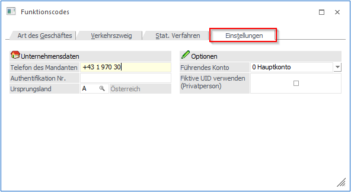
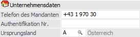
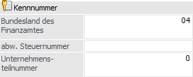
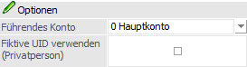
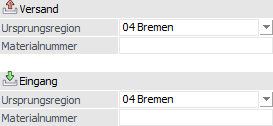

In dem Register "Einstellungen" werden die mandantenspezifischen Informationen hinterlegt.

Folgende Einstellungen können vorgenommen werden:
Unternehmensdaten

Ø Telefon des Mandanten
In diesem Feld ist die Telefonnummer des Mandanten zu hinterlegen.
Ø Authentifikationsnummer (nur Österreich)
Hier wird die Authentifikationsnummer in österreichischen Mandanten hinterlegt.
Ø Ursprungsland
Bei dem Ursprungsland handelt es sich um eine verpflichtende Angabe innerhalb der Intrastat. Das hier angegebene Land wird immer dann verwendet, wenn das Ursprungsland innerhalb der Artikelstamms nicht hinterlegt wurde.
Kennnummer (nur Deutschland)

Die Kennnummer des Auskunftspflichtigen ist eine 16stellige Schlüsselzahl, die sich aus den folgenden Elementen zusammensetzt:
ü Bundesland des Finanzamtes
Im
Feld "Bundesland des Finanzamtes" zu hinterlegen (2stellige Zahl).
ü Steuernummer (UStVA)
Im
Mandantenstamm zu hinterlegen (11stellige Zahl). Eine abweichende Nummer kann im
Feld "abw. Steuernummer" angegeben werden.
ü Unternehmensteilnummer
Im Feld
"Unternehmensteilnummer" zu hinterlegen (3stellige Zahl).
Hinweis
Alle Elemente der Kennnummer werden automatisch auf die benötigte Anzahl von Stellen aufgefüllt. Dieses Auffüllen mit Nullen geschieht links- (Bundesland / Unternehmensteilnummer) bzw. rechtsbündig (Steuernummer).
Ø Bundesland des Finanzamtes
In diesem Feld ist das Bundesland vom zuständigen Finanzamtes in Form einer 2stellige Zahl zu hinterlegen.
Ø abw. Steuernummer
Wenn die Intrastat-Meldung mit einer abweichenden Steuernummer abgegeben werden muss, so kann diese hier hinterlegt werden (z.B. bei Organschaften). Bleibt das Feld leer, so wird die Steuernummer aus dem Mandantenstamm herangezogen (Standard).
Ø Unternehmensteilnummer
An dieser Stelle ist die 3stellige Unternehmensteilnummer zu hinterlegen, falls diese vom Statistischen Bundesamt zur Unterscheidung getrennt zu meldender Unternehmensbereiche zugeteilt wurde.
Optionen

Ø Führendes Konto
Die Intrastat-Meldung (Typ "Versendung") erfolgt immer pro UID-Nummer des Empfängers. Da in WinLine FAKT-Belegen wiederum mehrere Personenkonten hinterlegt werden können, kann hier die Herkunft definiert werden, wobei folgende Möglichkeiten zur Verfügung stehen:
ü 0 - Hauptkonto
ü 1 - Rechnungsadresse
ü 2 - Lieferadresse
ü 3- Zusatzadresse
Hinweis
Bei der Intrastat-Ausgabe wird aus dem angegebenen Konto die UID-Nummer zu Laufzeit hinzugeladen. Bei einer fehlenden UID-Nummer wird das angegebene Konto in der Sperrtabelle angezeigt.
Achtung
Wenn die Herkunft "3 - Zusatzadresse" eingestellt wurde und im Beleg keine Zusatzadresse angegeben ist, so wird der Beleg nicht in der Intrastat-Ausgabe angezeigt!
Ø Fiktive UID verwenden (Privatperson)
Wenn diese Option aktiviert wurde, in der Intrastat eine Ausgabe mit der Art des Geschäfts "12" erfolgt und beim Konto keine UID vorhanden ist, so wird automatisch die fiktive UID "QN999999999999" verwendet. Dadurch wird ein solcher Beleg auch nicht in der Sperrtabelle angezeigt.
Versand / Eingang (nur Deutschland)

Ø Ursprungsregion
In diese Felder kann die Ursprungsregion für den Versand und den Eingang hinterlegt werden. Ob diese Eingaben zum Tragen kommen, kann im Feld "Ursprungsregion" des Artikelstamms hinterlegt werden.
Ø Materialnummer
Bei der Materialnummer handelt es sich um einen vom Statistischen Bundesamt mitgeteilten alphanumerischen Schlüssel, der zur Kennzeichnung der Meldedateien benötigt wird.